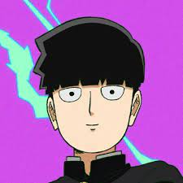

Olá, Mundo!
Esse é o meu primeiro conteúdo HTML! Estou muito feliz!
Este é um momento único! Estou criando um site!🫶
Isso é muito legal pois eu posso fazer muitas coisas
Como essa quebra de texto simplesmente ao digitar!
Vamos agora colocar uma imagem no nosso site
Vamos falar sobre o anime Mob
História
O anime Mob Psycho 100 acompanha o jovem Shigeo Kageyama, um garoto aparentemente comum estudante do ensino médio apelidado de Mob. Apesar de muito discreto, Mob é na verdade um esper, um tipo poderoso de médium, tendo experienciado o alcance de seus poderes psíquicos desde muito novo. Para não perder controle desse imenso poder, ele vive em constante vigilância, criando a persona de aparência apática pela qual ficou mais conhecido. Para ajudá-lo a controlar suas habilidades, Mob decide ser assistente do astuto Reigen Arataka, um golpista que garante para seus clientes ser um vidente capaz de resolver casos sobrenaturais. Mob deseja viver uma vida normal como qualquer outro adolescente, mas uma série de problemas parece o perseguir. A partir disso, suas emoções reprimidas começam a crescer de um modo que seus poderes ameaçam romper todos os limites quando Mob e Reigen se deparam com uma organização de pessoas iguais a ele.
Sinopse
"Kageyama Shigeo, o Mob, é um garoto que não leva muito jeito pra se expressar, mas que é um poderoso telepata. Decidido a levar uma vida normal, Mob suprime seus poderes extrasensoriais, mas quando suas emoções atingem um pico de 100%, algo terrível lhe acontece! Rodeado de falsos telepatas, espíritos do mal e misteriosas organizações, como Mob reagirá? Que decisões ele vai tomar?".
Poderes
Características Físicas Sobre-Humanas, Telecinesia, Telepatia, Voo, Absorção de Energia, Criação de Barreira, Manipulação Energética, Manipulação de Plantas, Resistência a Manipulação Mental.
Quando começou
Mob Psycho 100 foi crido pelo quadrinista One e começou a ser publicado no Japão em 2012 e foi finalizado em 2017, com a primeira temporada do anime sendo exibida em 2016. Atualmente no Brasil, o anime Mob Psycho 100 pode ser acompanhado pela Crunchyroll.
®